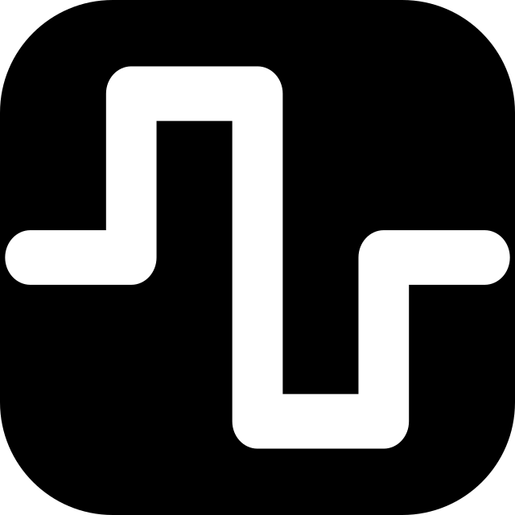

OP-1 Design Kit
Patterns, typography, encoder colours and graphics guidance for people building synth, effect and utility screens. Includes original examples and an installable agent skill.

SquareWave StudioGitHub ↗OPEN SOURCE / ORIGINAL OP-1
Design guidance and instruments for the original OP-1, maintained by SquareWave Studio with the community.
Patterns, typography, encoder colours and graphics guidance for people building synth, effect and utility screens. Includes original examples and an installable agent skill.
Firmware mods for the original OP-1, starting with GIN: a drum synth that gives each of the 24 keys its own synthesised sound.
SUPPORT SQUAREWAVE
These projects are free. If one has been useful, you can leave a thank-you tip. It helps me keep building them.